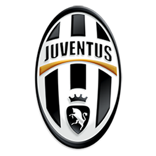
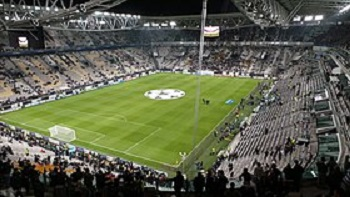
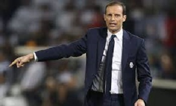

Historia
La Juventus de Turín5 (oficialmente «Juventus Football Club S.p.A.», del latín iuventūs,Nota 2 español juventud, AFI: juvɛntus), conocida simplemente como Juventus o, popularmente, la Juve (AFI: ˈjuːve), es un club de fútbol italiano con sede en la ciudad de Turín, capital de la región del Piamonte. Fue fundado el 1 de noviembre de 1897 con el nombre de «Sport Club Juventus» por un grupo de estudiantes locales.
Escudo
Titulo |
Cantidad |
| Uefa Champios League | 2 |
| Liga de Italia | 33 |
| Copa del Italia | 13 |
| Mundial de clubes | 0 |
| Supercopa de Italia | 7 |
| Supercopa de europa | 2 |
Estadio
Tecnico
Capitan